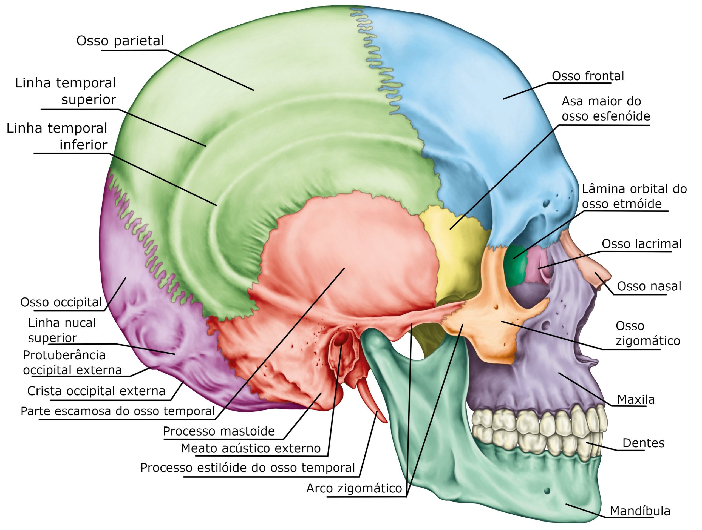
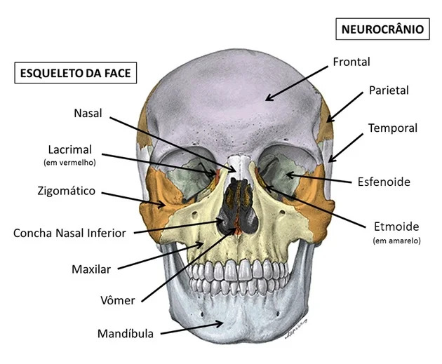

Detalhes do Crânio
Trata-se de uma complexa estrutura que constitui parte da cabeça humana, possui mais de sessenta forames e vinte ossos, podendo ser o mais desafiador, porém divertido assunto da anatomia humana para se estudar. Vamos começar!
Função: Proteção do cérebro, suporte das estruturas faciais
Ossos:

Neurocrânio
Frontal: osso largo e chato, apresentando-se para frente e para cima, possuindo duas porções: vertical (escama) e horizontal (tectos das cavidades orbitais e nasais). Se articula com 12 ossos (esfenoide, etmoide, parietais, nasais, maxilares, lacrimais e zigomático).
Occipital: é componente importante para a formação da base do crânio. Possui uma abertura oval, denominada forame magno, onde se comunicará com o canal vertebral. Apresenta porção escamosa (lâmina curvada que se estende posterior ao forame occipital) e a basilar (anterior ao forame occipital e mais espessa).
Esfenoide: caracteriza-se por ser um osso irregular, localizado na base do crânio, anterior aos ossos temporais e à porção basilar do osso occipital. Divide-se em: corpo, asas menores, asas maiores, processos pterigoideos.
Etmoide: osso de característica mais leve, esponjosa, irregular, situado na região anterior do crânio. Divide-se em quatro porções: lâmina horizontal (crivosa), lâmina perpendicular, duas massas laterais.
Temporal: é um osso que localiza-se de forma bilateral, muito complexo, pois seu interior faz parte do aparelho auditivo. Possui três partes principais: escamosa, timpânica e petrosa.
Parietal: osso responsável pela formação do teto craniano. Esse osso também se localiza de forma bilateral, que se apresenta com 2 faces, 4 bordas, 4 ângulos.

Occipital:Apresenta uma perfuração grande e oval responsável por permitir a comunicação do cérebro com o canal vertebral.
Esfenoide: É um osso irregular ímpar que fica localizado na base do crânio antes dos temporais e da porção basilar do osso occipital.
Parietal: É um osso par, sendo responsável por formar o teto do crânio. Seu formato é chato e apresenta duas faces, quatro bordas e quatro ângulos.
Temporal: É um osso par extremamente importante para nosso corpo, pois no seu interior está localizado o aparelho auditivo.
Frontal: Este é um osso largo e chato que fica localizado para frente e para cima. Ele apresenta duas porções, sendo uma vertical e outra horizontal, onde ficam localizadasas cavidades orbitais e nasais.
Etmoide: É um osso leve e esponjoso, que apresenta um formato irregular e está localizado na parte anterior do crânio.
Lacrimal: É o osso que abriga o saco lacrimal e responsável por sustentar o conteúdo da órbita.
Vômer: É um osso que compõe o septo nasal, criando assim uma divisão entre os dois lados da cavidade nasal.
Maxila: É o osso que forma a maior porção da face e que possui a maior parte do tecido muscular. É o responsável pelas expressões faciais.
Nasal: É um par de ossos localizado na face e que faz o contorno inicial do nariz.
Palatino: É um osso que fica localizado entre a maxila e o osso esfenoide. Ele tem formato de L e é responsável por formar a porção posterior do palato duro e o assoalho da cavidade nasal.
Zigomático: É o osso responsável por fazer a ponte entre o neurocrânio e o viscerocrânio. É ele que forma as maçãs do rosto.
Mandíbula: É o osso que forma o queixo e o contorno inferior da face. É ele que permite que a pessoa abra a boca para comer, mastigar e falar.
Concha nasal inferior: Está localizada ao longo da parede lateral da cavidade nasal.